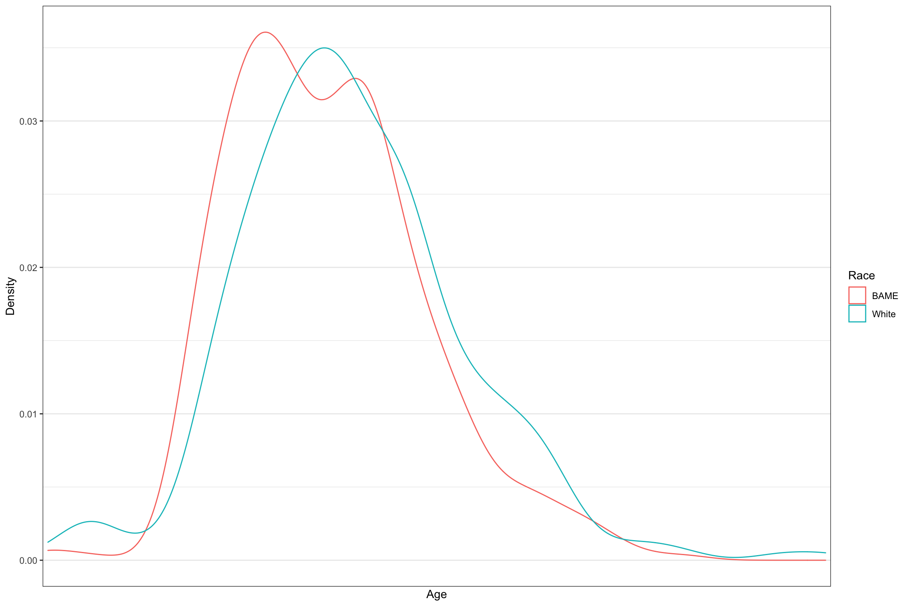

Unarmed Deaths
Of those who were killed, the below figure shows the weapon in which they were armed with, if any.

We are specifically interested in the third largest group- those who were shot and/or tasered despite not carrying a weapon. We are also interested in those who were killed when it was ‘unclear’ or ‘undetermined’ whether they were armed or not. It appears BAME people are killed more in these circumstances than White people, even before adjusting by population. Since we know over 60% of the US population is White, any findings are exaggerated if we scaled by population.
## # A tibble: 3 x 4
## Weapon White BAME Unknown
## <chr> <dbl> <dbl> <dbl>
## 1 unarmed 322 461 39
## 2 unclear 66 114 37
## 3 undetermined 119 127 26In these circumstances, despite representing a smaller population, BAME people were killed unjustifiably more frequently than White people. Below is a density plot for those who were unarmed and killed in each group:

Of those who were unarmed when killed, the characteristics of their age distribution is similar regardless of race, but there appears to be an offset between the two. Young BAME people are killed more at younger ages than young White people, within their respective population. Note: a density plot doesn’t necessarily compare the number of people who were killed, more how they were distributed across age groups- here, we are not comparing the numbers who died within each race but the ages at which they were killed.